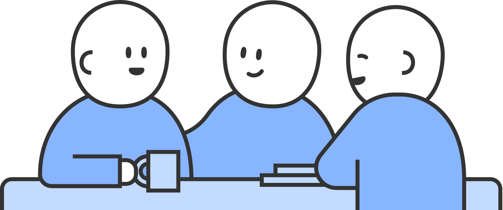

서울특별시교육청 학교 성폭력 온라인 신고센터
신고하기
가상신고
대응가이드
1 상황 인식하기
2 도움받을 곳 찾기
3 해결 방법 선택하기
4 신고하고 처리하기
5 다시 일상으로
5 다시 일상으로
다시 일상으로

성폭력은 피해자에게 여러 감정을 들게 합니다.
때로는 내가 왜 신고하기로 했는지 후회되기도 합니다.
때로는 쉽게 회복되지 않는 상처에 힘이 들 수도 있습니다.
숨이 가쁘면 잠시 쉬어가도 괜찮습니다.
자신을 좀 더 너그럽게 바라보아도 괜찮습니다.
하나만 기억해주세요.
당신이 겪은 문제는 당신 혼자만의 것이 아니라는 것을.
당신의 곁에는 언제나 당신을 지지하고 기다리는 우리가 있습니다.
메인으로 돌아가기
공유하기
SNS에 공유하기
닫기